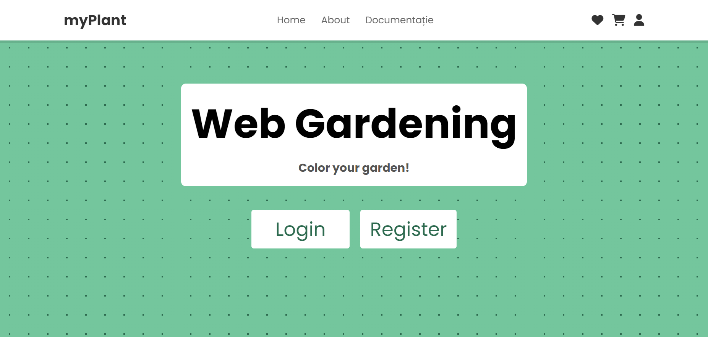
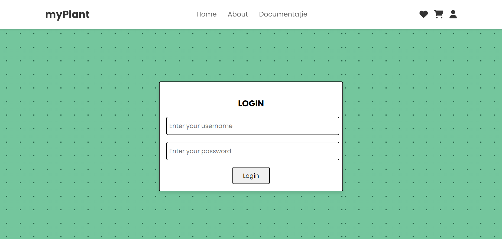
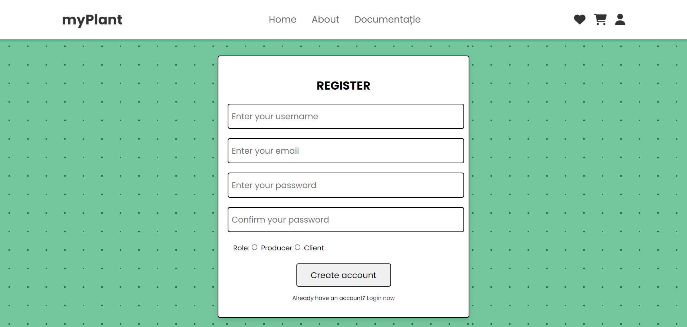
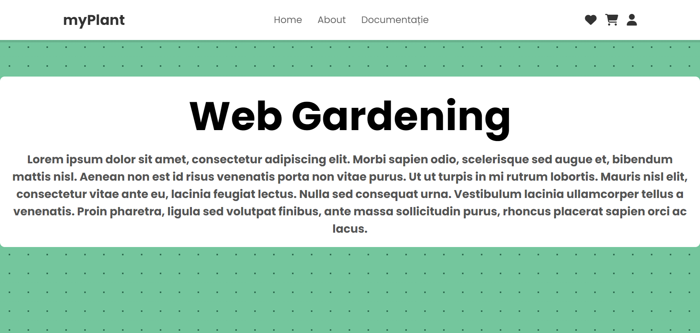
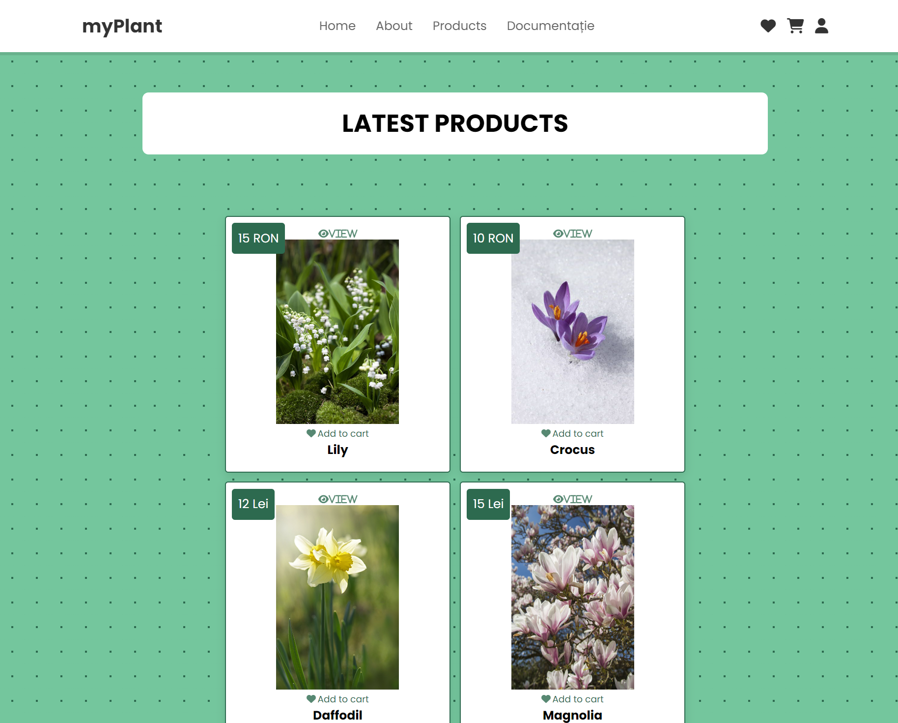
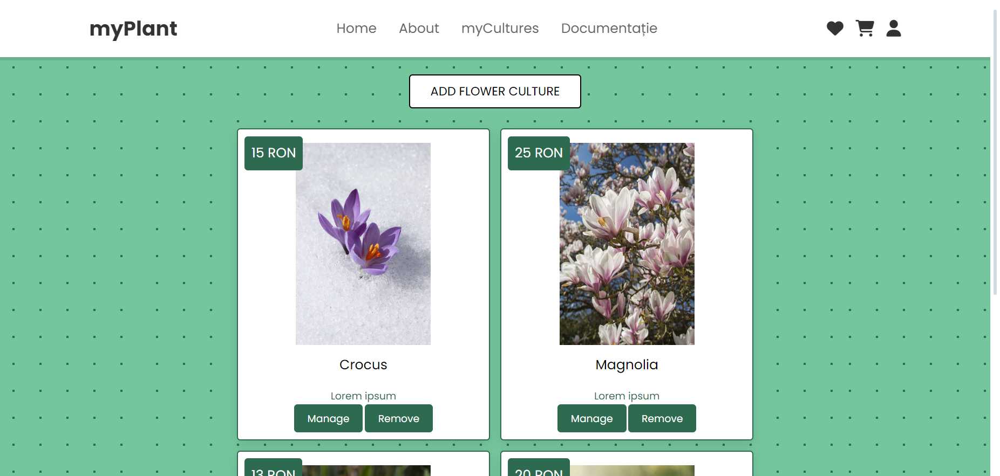
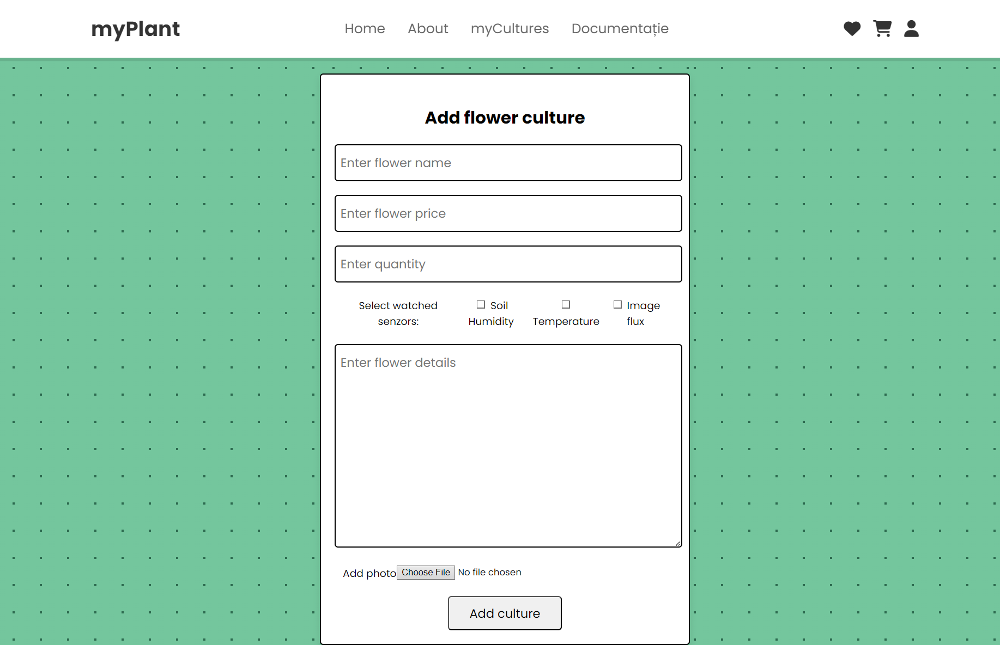

Web Gardening - Documentație academică
Membrii echipei
- Căprioară Alina
- Iacob Anca Vasilica
Afiliație
- Facultatea de Informatică Iași
1. Introducere
1.1 Scop
„Web Gardening” este o aplicație Web de tip asistent digital care permite utilizatorilor autentificați cu rolul de producător gestionarea culturilor de flori, iar pentru utilizatorii cu rolul de client, cumpărarea de flori de primăvară de la producători. Această documentație va prezenta general prima versiune a produsului nostru.
1.2 Public țintă
Acest document este destinat profesorilor ce vor revizui calitatea și funcționalitatea aplicației noastre, și va reprezenta o parte din nota finală pentru acest proiect.
1.3 Domeniul produsului
Produsul în curs de dezvoltare este o aplicație Web de tip asistent digital pentru cultivarea florilor de primăvară și vânzarea lor. Astfel, utilizatorii de tip producător pot gestiona mai multe culturi de flori concomitent, primind sugestii de la aplicație pentru crearea unui mediu de creștere potrivit pentru culturile proprii. Sugestiile sunt generate în urma analizei unei mulțimi de factori, precum umiditatea solului, temperatura ambientală și un flux de imagini vizând dezvoltarea plantelor monitorizate. Utilizatorii de tip client care doresc să achiziționeze flori pot alege să fie notificați când acestea devin disponibile, prin intermediul unui sistem de notificări (email/în cadrul aplicației). Publicul țintă vizat pentru aceasta aplicație sunt producătorii de plante cu scopul de vânzare și oamenii care își doresc să cumpere flori de primăvară.
2. Descrierea generală
2.1 Perspectiva produsului
Această aplicație este dezvoltată la solicitarea profesorilor noștri, fiind luată în considerare pentru nota finală la cursul „Tehnologii Web”.
Aplicația este formată din 4 componente principale:
- Autentificare. Utilizatorii se pot loga sau își pot crea cont.
- Gestionare a culturilor de flori. Producătorul poate adăuga, edita, șterge culturi de flori, iar aplicația monitorizează datele despre flori primite de la senzori și fluxul de imagini, interpretând datele pentru a trimite sugestii. În aceasta este încorporată analiza fluxului de imagini cu scopul de a calcula momentul pentru recoltare.
- Gestionare a achiziționărilor clienților. Permite cumpărarea de flori de la producători și adăugarea într-o listă de așteptare în cazul în care planta dorită nu a fost recoltată încă.
- Notificări. Permite clienților să aleagă să fie anunțați când o anumită plantă dorită devine disponibilă pentru a fi achiziționată.
2.2 Funcționalitățile produsului
Funcționalitățile principale sunt structurate în așa fel încât aplicația să fie cât mai ușor de utilizat pentru ambele tipuri de utilizatori. În momentul autentificării, utilizatorul alege un rol: producător/client. Astfel, când se va loga ulterior, va avea pagini specifice rolului ales. Pentru producător, pagina principală are un meniu în care poate alege să vizualizeze/editeze culturile existente sau să adauge unele noi. Pagina de adăugare a unei noi culturi cuprinde un formular cu detalii precum: tipul de plantă, parametrii de creștere doriți(temperatura optimă, umiditatea solului, nivelul de luminozitate), și detalii suplimentare despre mediul de creștere(tipul de sol, dimensiunea vasului). Pagina de vizualizare culturi existente oferă posibilitatea de a vedea sugestii de îmbunătățire a recoltei pentru fiecare cultură, bazate pe analiza datelor primite de la senzori.
Un exemplu de flux pentru un producător deja autentificat ar fi următorul:
- Login
- Vezi culturi existente
- Vizualizează cultura de narcise
- Vizualizează sugestii
- Întoarcere în pagina culturii de narcise
- Vizualizează detalii despre mediul de creștere
- Actualizează detalii despre mediul de creștere: schimbarea tipului de sol
- Salvează modificările făcute.
- Întoarcere în meniul principal.
Pentru client, pagina principală are un meniu în care poate alege să vizualizeze florile oferite de producători și florile pentru care se află în așteptare. Clientul poate parcurge meniul de produse disponibile și de a le adăuga în coșul de cumpărături/produse preferate, sau poate seta alertă pentru un anumit produs dorit, dar momentan indisponibil.
Un exemplu de flux pentru un client deja autentificat ar fi următorul:
- Login
- Vezi flori
- Alege o floare
- Vizualizează disponibilitate
- Setează alertă de notificare
- Întoarcere în meniul principal
2.3 Clasele și caracteristicile utilizatorilor
Aplicația noastră ar putea fi folosită de producătorii de flori, fiind persoane sau companii ce cultivă și gestionează culturi de flori. Iar în cazul clienților, aceștia pot fi persoane fizice sau alte companii ce doresc să achiziționeze un anumit tip de flori.
2.4 Mediul de operare
Aplicația va fi integrabilă pe mai multe platforme, adică va fi accesibilă de pe diferite dispozitive. Componentele frontend vor fi scrise și proiectate în HTML5 și CSS. Pentru partea de backend vom utiliza PHP, iar pentru bazele de date vom folosi SQLite. În plus, vom folosi GraphQL ca limbaj de interogare pentru API-urile noastre.
2.5 Constrângeri de proiectare și implementare
Proiectul trebuie să respecte o serie de constrângeri. În ceea ce privește designul, aplicația trebuie să fie intuitivă și ușor de utilizat de către orice utilizator, indiferent de capacitățile tehnice ale acestuia și de tipul de utilizator (producător/client).
O altă constrângere se referă la securitatea datelor. Pe lângă datele personale ale fiecărui utilizator, aplicația va primi și informații despre locația de preluare a comenzii, iar aceasta informație trebuie să fie criptată și procesată corespunzător pentru a evita orice scurgere de date.
2.6 Documentația utilizatorului
Aplicația Web Gardening a fost proiectată pentru a fi cât mai user-friendly, astfel încât o documentație detaliată nu este necesară. Vom realiza un videoclip demonstrativ cu produsul final, unde vom prezenta feature-urile principale și modul de utilizare a acestora.
2.7 Ipoteze și dependențe
Aplicația oferă o modalitate de păstrare a informațiilor despre culturile producătorilor, iar în același timp le oferă oportunitatea de a-și vinde produsele, iar pentru client reprezintă o modalitate de a cumpăra ușor plante și de a-și planifica următoarele cumpărături.
3. Cerințe de interfață externă
3.1 Interfețe cu utilizatorul
Pagina de main
Aceasta este prima pagină cu care interacționează utilizatorul. Din această pagină, poate să creeze cont sau să se autentifice.
Paginile login/register
Pagini pentru creare/logare în contul existent. În momentul creării unui cont, utilizatorul își alege rolul: client/producător.
 Pagina de about
Pagină creată pentru a oferi o scurtă descriere și backstory al aplicației.
Pagina de products
Pagină specifică utilizatorului de tip client în care poate vedea o varietate de produse oferite de către producători.
Pagina de flower cultures
Pagină specifică utilizatorului de tip producător în care își poate vizualiza culturile existente. Are posibilitatea, în plus, de a le edita.
Pagina de Add new flower culture
Pagină specifică utilizatorului de tip producător în care poate adăuga o nouă cultură de flori, cu anumite specificații. Are posibilitatea.
3.2 Interfețe hardware
Pe partea partea utilizatorului, aplicația va rula pe orice browser desktop, cum ar fi Chrome, Firefox, Opera, care acceptă HTML, CSS și Javascript. Pe partea backend, invocarea unui serviciu/API Web va fi efectuată în manieră asincronă via suita de tehnologii Ajax. Aplicația noastră va utiliza PHP pentru implementare.
3.3 Interfețe software
- Fonturi și pictograme Google (licență gratuită)
- Foi de stil CSS
- Visual Studio Code
- Figma